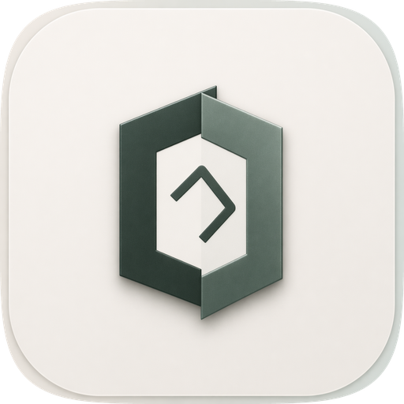
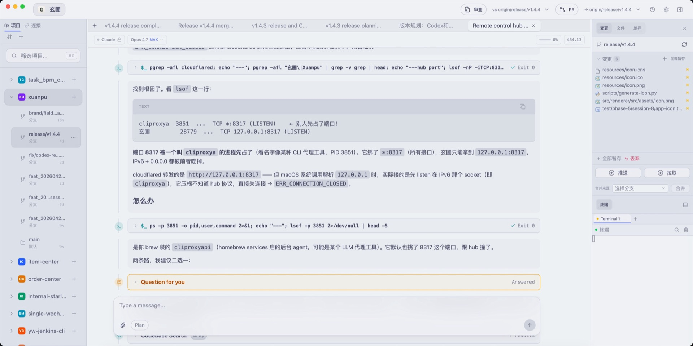

Worktree 是任务边界
每个需求拥有独立目录、分支和运行状态。你不用在同一个仓库里不断 stash、切分支、找回上下文。

玄圃 Xuanpu Workbench面向构建者的本地桌面工作台。玄圃把项目、worktree、上下文、Agent session、 变更和输出放回同一个现场，让 AI coding agents 不再只是编辑器里的聊天框。

当任务跨过多个文件、多个分支、多个 agent 和多次验证时，真正稀缺的不是输入框， 而是一个能保存现场、展示变化、承接下一轮工作的桌面环境。
每个需求拥有独立目录、分支和运行状态。你不用在同一个仓库里不断 stash、切分支、找回上下文。
Claude Code、OpenCode、Codex 的输出被放进统一时间线，工具调用、计划、确认和结果能被继续追踪。
右侧变更、文件、差异和终端输出一起留在当前任务里。你看到的不只是回答，而是这轮工作真正改了什么。
玄圃关注的是一轮真实工作的生命周期：开一个任务现场，让 agent 在正确目录执行， 观察变化，验证结果，最后把分支、构建和 PR 都收束起来。
玄圃当前主支持 macOS。安装包内包含安装辅助脚本：双击即可复制到 `/Applications`、移除 quarantine 属性并打开应用，降低未签名版本的首次启动成本。